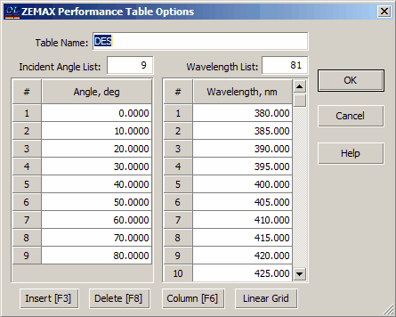

Export ZEMAX Performance Table
Export ZEMAX Performance Table
Before performing the Export to Performance Table operation in OptiLayer, it is essential to enter a set of incident angles and wavelengths for calculating the performance. This set of parameters includes transmittances, reflectances, and their phases calculated for both polarizations at the specified range of wavelengths and incident angles. The user will need to input the desired incident angles and wavelengths in a specific form provided by OptiLayer. This information is crucial for generating the performance table accurately based on the specified range of angles and wavelengths. By entering the necessary parameters in the designated form, users can ensure that the exported performance table aligns with their requirements for analysis and evaluation of optical coatings.

The incident angles and wavelengths can be set with arbitrary values. To simplify this process, the dialog includes buttons for quick access to the Grid Generator and Column Editor tools.
The performance table will be saved under a default name generated based on the currently loaded design. If needed, you can modify the name using the Table Name edit field. Please ensure that the name of the Performance Table adheres to ZEMAX naming conventions. To initiate the Export Performance Table procedure, click the OK button. This action will incorporate performance data into the ZEMAX coating file, enabling seamless integration of the calculated transmittances, reflectances, and their phases for further analysis and evaluation within the optical design software.